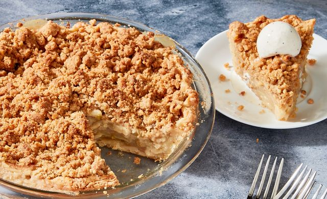

So what is Apple Crumble?

Crumble was thought to originate during the 1940s in Britain as a quick and easy pudding.
It uses the same ingredients as sweet pastry (flour, butter and sugar) and the method of
rubbing the butter into the flour is the same but instead of bringing it together to a dough with liquid it’s
just scattered over the filling and baked, keeping its short, crumbly texture.
Ingredients
- 1kg bramley apples, peeled
- 1/2 lemon, juiced
- 175g golden caster sugar
- 1/4 tsp ground cinnamon
- custard or ice cream, to serve
- 350g plain flour
- 175g salted butter, chilled and diced
- 100g golden caster sugar
Method
- To make the crumble, put the flour and butter in a food processor and pulse to rough breadcrumbs. Stir in
the sugar and a big pinch of salt.
- Heat the oven to 190C/fan 170C/gas 5. Cut the apples into quarters and remove the cores. Thickly slice and
toss with the lemon juice, 150g of the sugar and the cinnamon. Put the apples in an ovenproof dish and
scatter over the crumble mix, spreading it evenly. Sprinkle over the rest of the sugar.
- Bake for 40 minutes or until golden on top and bubbling around the edges. Serve with custard or ice cream.
If you liked this recipe how about checking out the others...
Home